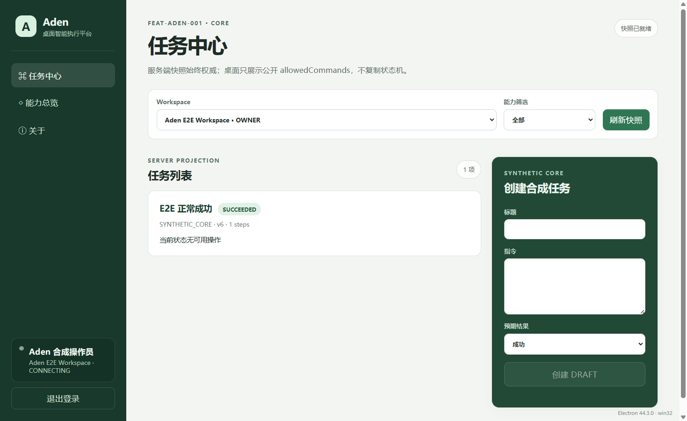
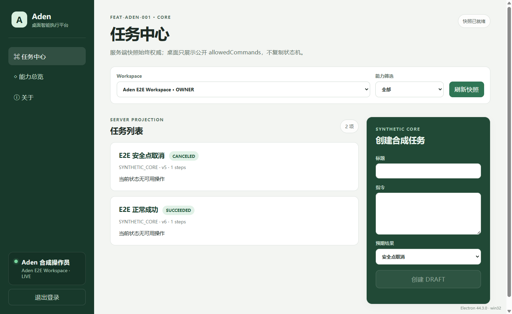

Aden 安装版并行环境复验报告
2026-09-26 09:58–10:04 · 执行者 Codex · 对象 Aden Desktop 0.2.0 · 用户接受决定：待确认
本报告按本轮事前清单及只读核对结果整理。上一轮安装版实际操作和截图保存在原始报告；本轮核对安装包与运行产物版本后复用五张截图，没有将历史截图写成新拍摄。
环境与证据基线
单一 Git 工作树 D:/2025Ai/26-05-23/java-workspace，HEAD fe35a459ff92d913fe6bde293b2340add392e14f；Aden 桌面目录、后端模块和本 Feature 为未跟踪目录。源码、构建目标和当前用户唯一的安装目录仍为共享路径。没有创建工作树或迁移其他任务修改。
已安装 Electron 页面入口：file:///C:/Users/admin/AppData/Local/Programs/Aden%20Local%20Test/resources/app/out/renderer/index.html；视口为上一轮截图对应的 1469×901，安装版处于可见桌面窗口。当前测试服务：RuoYi 127.0.0.1:1348/PID 28280，隔离 MySQL 127.0.0.1:1346/PID 35112、库名 aden_e2e，隔离 Redis 127.0.0.1:1347/PID 35252、DB 15；安装版主进程 PID 35908，独立用户资料目录位于该轮临时实例内。后端 JAR 从完整构建产物复制到临时目录，未覆盖共享 JAR。运行期间不查询或更改用户继续体验后可能产生的数据。
安装 exe 与本地包解包 exe SHA-256 均为 D7DC24D551F669203CBCD72F605DF537EC6E8887C2C0171E036F6C94BF585221；安装目录与当前 out 共 5 个文件，逐文件哈希差异 0；主入口、preload 和 renderer HTML 亦与本地包一致。当前后端 JAR 副本 SHA-256 5977D5B7279BF80D1206AEF3934723DD1914190DDAE70525B0936FE3E81E135D。合成数据在上一轮为一名操作员、一个 Workspace、两项任务；前轮 E2E 结束后清理。当前人工实例为另一临时批次，现有数据数量未查询。
共享 8081 后端及 5173/5174 前端页面没有参与本轮验收。不同端口和浏览器标签页不能证明 Cookie 或业务数据完全隔离。本 Feature 业务 UI 是 Electron 安装版，没有专属网页前端 URL；网页验收默认通道为 Codex 内置浏览器，实际未访问共享页面。前轮内置浏览器打开本地 HTML 报告被 URL 安全策略拒绝，本轮未换浏览器或另起本地 HTTP 绕过。
当前用户安装与代码目录
- 前置/输入
- 当前用户本机已安装的 Aden Local Test 0.2.0。
- 步骤
- 只读核对安装器、安装 exe、HKCU/HKLM 卸载项与
resources/app/out。 - 预期
- 当前用户安装，编译文件可读，安装文件与本地包一致。
- 实际
- HKCU 中
Aden Local Test 0.2.01 项，HKLM 两处 0 项；安装 exe 与解包 exe 哈希一致，5 个out文件与构建目录逐一匹配。 - 截图状态
- 不适用，使用注册表、文件和哈希回读。
- 证据/限制
- 安装器 SHA-256
CA87EEB704A2D3D01D809928622FF87DB8C3B5770FF7296941788BDA35EBB742；本轮核对记录、前轮安装记录。本轮没有重装。
本地 API 配置边界
- 前置/输入
- 当前安装配置
channel=local-test、API127.0.0.1:1348；桌面源码的配置矩阵。 - 步骤
- 只读回查安装配置，运行
npm.cmd test -- tests/runtime-config.test.ts。 - 预期
- 本地包仅允许精确回环主机；release 仅 HTTPS；拒绝 URL 中凭据、查询和片段。
- 实际
- 2026-09-26 10:03，6/6 测试通过，退出码 0；当前安装配置为回环地址。
- 截图状态
- 不适用，使用测试输出与配置回读。
- 证据/限制
- 本轮执行记录；未验证正式 HTTPS 服务。
安装版登录、Workspace 和退出
- 前置/输入
- 前轮隔离合成操作员、Workspace；当前安装 exe 和三个入口文件与前轮本地包版本匹配。
- 步骤
- 回读 09:44 实际安装版 E2E 的 file URL、登录、Workspace LIVE、退出结果；逐张回读三张截图。
- 预期
- 从安装目录加载；登录后 Workspace LIVE；退出回登录页。
- 实际
- 结果 JSON 指向安装目录 file URL；截图显示登录表单、Aden E2E Workspace LIVE 和退出后的空白登录表单。
- 截图状态
- 已截图并逐张回读；图片均来自 09:44 的实际操作，本轮未新拍。
- 证据/限制
- E2E 结果；当前人工窗口未被抢占。

{kind=link}
{kind=link}
合成任务成功
- 前置/输入
- 09:44 隔离合成任务“E2E 正常成功”。
- 步骤
- 回读安装版 E2E JSON 及任务终态截图；核对当前安装版文件哈希。
- 预期
- 任务进入
SUCCEEDED。 - 实际
- JSON 与截图均显示
SUCCEEDED。 - 截图状态
- 已截图并回读，复用 09:44 真实截图。
- 证据/限制
- E2E 结果；截图时连接徽标短暂显示 CONNECTING，任务终态可辨；本轮未重复写入。
{kind=link}

合成任务取消
- 前置/输入
- 09:44 隔离合成任务“E2E 安全点取消”。
- 步骤
- 回读安装版 E2E JSON 及取消终态截图；核对当前安装版文件哈希。
- 预期
- 任务进入
CANCELED。 - 实际
- JSON 与截图均显示
CANCELED。 - 截图状态
- 已截图并回读，复用 09:44 真实截图。
- 证据/限制
- E2E 结果；本轮未重复写入。
{kind=link}

源码同步与发布候选结构
- 前置/输入
- 当前安装版窗口供人工体验；源码、构建目标和唯一安装目录仍共享。
- 步骤
- 只读比对 5 个当前构建文件与安装目录哈希；回读前轮同步记录；检查发布候选
app.asar、本地配置与签名。 - 预期
- 本轮源码变更后可安全构建、同步并重启，文件一致；发布候选结构正确。
- 实际
- 当前文件 5/5 一致；前轮同步退出码 0 且保留备份；发布候选含 ASAR、不含 local-test 配置，签名 NotSigned。本轮不能重跑同步，因为脚本需写共享构建目标和安装目录，并要求先关闭正在使用的安装版。
- 截图状态
- 不适用，使用哈希、同步日志及包结构。
- 阻塞/下一步
- 本轮重同步与重启未执行；前轮 Pass 保留历史。待人工体验结束，并确认独立构建/安装资源或无冲突窗口后定向复验。候选 GUI 启动仍未验证。
- 证据
- 本轮哈希、前轮同步和发布记录。
云端手动打包
- 前置/输入
- 仓库中的手动 GitHub Actions workflow 文件仍未跟踪。
- 步骤
- 只读回查配置；未执行 Git 提交、推送或云端工作流。
- 预期
- 实际云端运行通过，artifact 和哈希可回读。
- 实际
- 仅有本地 workflow 配置，无本轮 run URL、日志或云端 artifact。
- 截图状态
- 不适用，需云端日志与产物。
- 未执行原因
- 无 Git 写操作授权；配置存在不等于云端构建通过。
- 证据
- workflow 配置、本轮清单。
结论与交付限制
本轮 5 项通过（其中 03–05 使用经版本核对的 09:44 安装版截图）、1 项阻塞、1 项未执行。原轮 6 Pass/1 NotRun 是独立历史结果。用户接受决定仍待确认；未验证签名、发布候选 GUI、正式 HTTPS 服务、云端实际打包或上线条件。
报告由本轮清单、只读命令输出和前轮同版本截图人工整理。Codex 内置浏览器曾拒绝打开本地 file:// 报告并禁止间接绕过，因此本轮报告浏览器视觉检查未执行；交付前仅检查 HTML 结构、文字、相对链接与图片文件。
证据结果和截图状态分别记录；所有截图均来自实际安装版运行，不包含凭据或 Token。